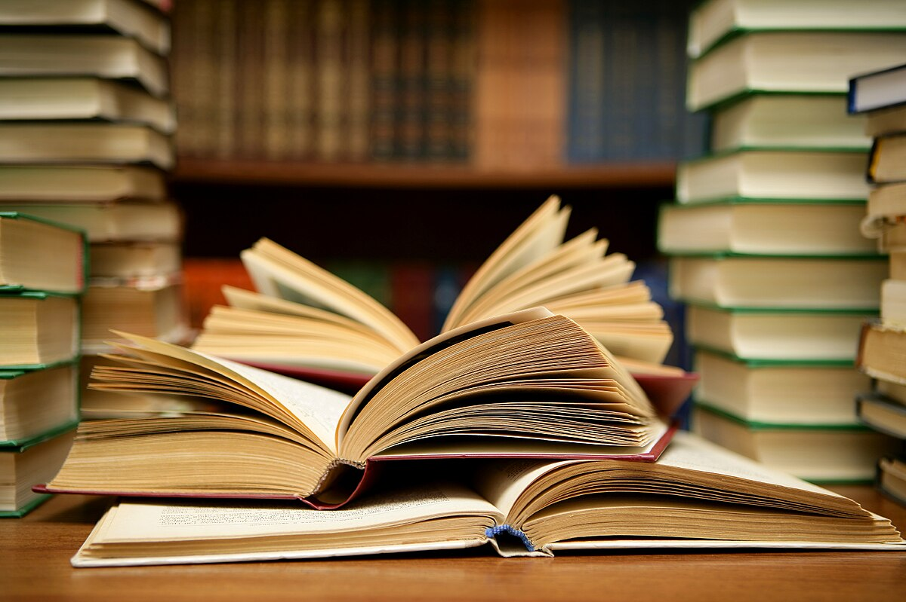
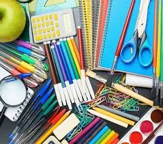
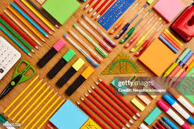

|  | Books are timeless vessels of knowledge, imagination, and human experience. From ancient scrolls to modern e-readers, they offer unparalleled access to diverse worlds, ideas, and perspectives. Reading a book can transport you to distant lands, introduce you to fascinating characters, and immerse you in complex narratives. Beyond entertainment, books serve as powerful tools for learning, allowing us to delve into history, explore scientific concepts, or master new skills. They stimulate critical thinking, expand vocabulary, and foster empathy by inviting us to understand different viewpoints. In an increasingly digital age, the enduring power of books to educate, inspire, and connect remains invaluable. |
|  | Studying stationery, while seemingly simple, plays a crucial role in enhancing the learning experience. From the smooth glide of a quality pen across paper to the vibrant hues of highlighters emphasizing key points, each item serves a purpose in organizing thoughts and retaining information. Notebooks provide a dedicated space for notes and diagrams, while sticky notes offer quick reminders and annotations. Erasers allow for correction and refinement, fostering a less daunting approach to mistakes. The tactile nature of these tools can improve focus and memory, making the act of studying more engaging and effective. Ultimately, well-chosen stationery transforms a passive activity into an active, organized, and often more enjoyable pursuit of knowledge. |
|  | Studying is the dedicated process of acquiring knowledge and understanding, a fundamental pillar of personal and intellectual growth. It involves active engagement with information, whether through reading, listening, practicing, or reflecting. Effective studying goes beyond mere memorization; it cultivates critical thinking, problem-solving abilities, and the capacity to connect diverse concepts. This deliberate effort to learn not only helps in achieving academic or professional goals but also builds discipline, perseverance, and self-reliance. Studying empowers individuals to adapt to new challenges, expand their horizons, and continuously evolve, making it an indispensable habit for lifelong learning and success in an ever-changing world. |